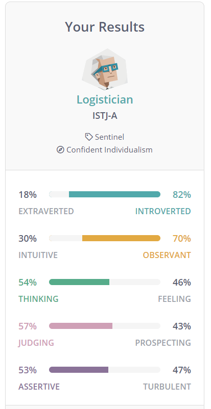
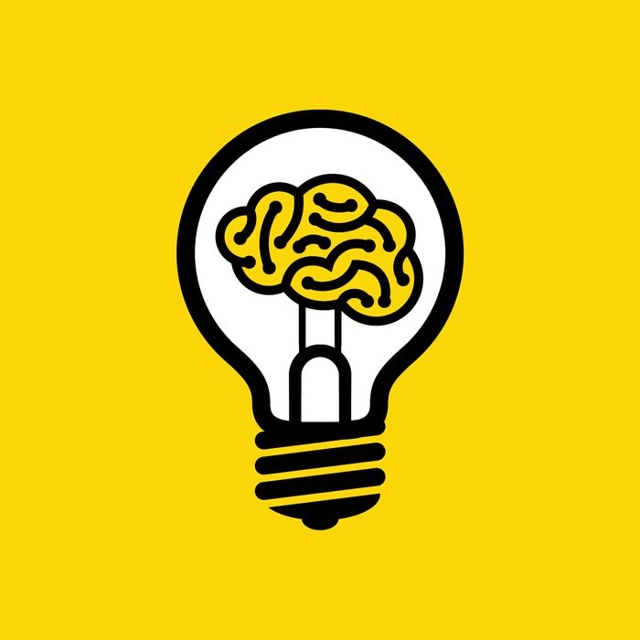

About Me
My name is Naveed, I am currently studying first year in the Bachelor Of Information
Technology. My nationality is Sri Lankan and so is my culture, although I was born and raised in
Australia. I am fluent in English and can understand some of my cultures language, Tamil. I recently
got into a new hobby called ‘astrophotography’ and I enjoy spending my nights outside star gazing. I
also enjoy gaming especially with friends whether its competitive or just for fun. I am
approachable and would be open to communication if you are nice and polite.
My Interest In IT
My interest in IT is in the networking field although I enjoy other areas of IT such as programming.
My interest in IT started when I entered secondary, my love for computers came with gaming and
learning about the parts needed to power a computer including the advanced programming and
rendering needed to get games running. I have helped many inexperienced friends with their
computer issues and have had a vast array of success with these challenges.
Ideal Job
My ideal job would be in the areas of networking, cyber security, or cloud computing. An example
for my ideal job can include the following job advertisement:

Job title: Cloud Operations Engineer
About this job:
Support and project work in cloud software. Deployment and scripting of cloud applications
for the business to use. BAU support work as well as complicated migration work. This position
attracts me as it has very high pay and is involved with the future of cloud technologies. It appeals to
me because it is related to cloud applications and the development of them to be implemented in businesses
My ideal job
The skills required for my ideal job:
Prior experience in a Cloud Operations engineering role as a technical specialist.
Strong skills in Linux, Networking, Scripting and Web Application Servers.
Solid experience in supporting relational databases.
Experience in customer driven environments.
Experience in supporting SaaS based platforms.
Experience in migrating customers to the cloud (AWS only).
The skills I currently have:
Strong general computer skills.
Cooperation skills
Communication skills
Work experience in the IT field
Basic programming skills
Fast learner
My plan to acheive the skills necessary for my ideal job:
My plan to achieve the skills I need for my ideal job would be to gain experience in the IT field as I
study. I would apply for contract jobs and work for little time at many different places which would
allow me to slowly build up my resume and experience list. Then by the time I have finished my
course, which is the Bachelor of Information Technology, I would have had a lot of reasonable
experience in the IT field and would make it easy for me to find a job. Then I would slowly find better
jobs and increase my ranking all the way up to my ideal job which would be any of the fields
including networking, cloud computing or cyber security. I would also have multiple investments in
crypto-currency and stocks to earn money on the side, which can help support my future family and
allow me to have a source of income in the long term.
Personal Profile



What do the test results mean for me?
To me the Myers-Briggs test results are a vague indication to my true personality and that my
personality is different in many ways such as the fact that I am truly not heartless, and I do care for
people other than the ones closer to me. The learning styles test however shows that I am a visual
learner which maybe correct as I learn better through tutorials which demonstrate a procedure.
Although I can also learn well through figuring things out myself by simply experimenting. The big
five personality test maybe correct in a way as I am less of an extrovert, but I do have high logical
thinking and would rather use my logic to perform actions that simply going by my ‘heart’. Overall,
these tests do not represent a true identification of myself, but they can give a very vague and short
view of who I am.
How may these results influence my behaviour in a team?
These results will not change how I behave but they do indicate how I behave. When in a team I
would contribute when I need to and would contribute so that the team succeeds, however I would
not vote myself for a leading position as this is not one of my attributes or skills. Being in a team
according to the test results would result in me contributing but not taking up leader roles and this
gives an accurate representation to how I would behave truly.
How should you take this into account when forming a team?
I would take this into account and form a team which already has a team leader and would help
assist that team in its contributions but depend on another team member to coordinate the team.
Although I would be open to contributions and feedback on my contributions and would like to
improve to be a better teammate and help the team in succeeding.
Project idea

My project idea is to create an app that can take and convert pictures into PDF files and sort them
according to their subject. This would be useful to use when needing to keep records of receipts or
invoices. This app is important and useful for everyday people and would help make people’s lives
easier and provide efficient recording of their data. During the development of this app, I would
encounter some issues such as the conversion of different types of image files into a PDF for
example some users may be using RAW image files and this is unusual but not impossible so I would
have to find a way to convert that RAW image to a PDF file.
Overview
The app would be a simple design and have easily accessible buttons and functions. It would take or
obtain pictures using the gallery of already taken pictures or using the inbuilt camera to take a new
picture. After this process it would convert the image into a PDF file format and store this file in a
location of the user’s choice. The user can also set a folder to organise the PDF files automatically
according to their type chosen by the user, an example of a type of can be ‘electronics’ or ‘groceries’.
The app would also be able to set reminders for warranties for each separate PDF created and the
app would be able to open the PDF files as well.
Motivation
An app that can organise receipts by converting them into readable file formats and sorting them
according to their category/contents would be very convenient to the average consumer. According
to goodfirms.co, productivity ranks first among most used app store categories. Which shows that
people now days are into making their lives simple and easy by using apps for their daily tasks. My
project idea would add to that category and help make people’s lives easier in the sense of
organising and storing important data about their purchases. Creating an app would be convenient
for people as opposed to creating a product as the app is available in just a few clicks from their
personal smart device.
Description
The app would take the input data of a picture file which can be taken via the app or through the in-built
gallery app on the smart phone device. The app would then ask permission of the user to allow
access to storage, if the user accepted the app would proceed to process the image. The app then
confirms whether the user would like to convert the picture file into a PDF. If the user accepts then
the picture file would be converted into a PDF file format through a conversion process. After the
conversion, the PDF is stored in a new folder created in the users’ storage. The app then allows the
user to view the PDF and manage it. The app can allow the user to organise the PDF files and the
user can set parameters in which the app will automatically recognise and organise the PDF files into
their allocated folders. The app would include multiple customisations such as app themes and
settings. It would also allow the user to delete, copy, cut or move PDF files from folder to folder like
a regular file manager app. This app would also include the ability to back-up or restore the app data
through a generated backup file which can be read by the app. The app can also encrypt the backup
file where the user is given a key upon generation of the backup to allow the app to decrypt the
backup file for use on the app upon restoration. Another security feature that the app would include
is biometric app locking, depending on the smartphone, the app can be locked either by biometrics,
a simple passcode or not have a lock at all. This would allow the users to store their important data
without it being compromised by malicious apps or files and be protected from deliberate threats.
Overall, this app would function to help the daily tasks that people encounter and would make their
lives much more efficient and effective.
Tools and technologies:
The requirements needed to create this app would include a programming language which can be
used to create mobile apps. This can be java, C++, C#, PHP, or python which can all program mobile
applications. The programming language would be used to create the app which would run on
android and apple devices. This would mean creating 2 different apps one that is built for the apple
OS and one for the android OS. Adobe Photoshop can be used for the app design and layout which
can influence the usability and ease of use of the application. Android studio is an open-source tool
that can be used to emulate the app and test out its features while providing support to the many
versions and models of devices.
Skills required:
The main skills needed are programming skills and specifically programming for mobile applications.
Other skills include app design where the app must be made to conveniently allow users to navigate
and use the app. Further skills required are communication skills to allow the collection of user
feedback and implement changes to satisfy the user and their needs. Another skill required would
include having some hardware knowledge which can help as knowing what each piece of hardware
does can assist in programming software to utilize them. These skills are feasible and would be fairly
easy to obtain, making the app a realistic innovation.
Outcome:
If the project is successful it would provide users with an app that increases their daily efficiency and
effectiveness in tasks. It would allow users to store and manage receipts semi-automatically. The
problem of having to take time to organise and scan the receipts a person obtains throughout their
week has been solved with this app as the process can be done faster and easier. This development
would fill in the gap in the market with an app that solves a problem that is faced by people almost
daily.